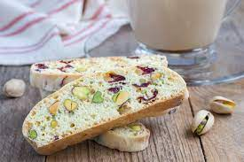

Cranberry Pistachio Biscotti

The red and green make a great Christmas cookie. Have used other nuts instead of pistachios with success. If your pistachios are salted, omit the 1/4 teaspoon salt from the recipe.
Ingredients
- ¼ cup light olive oil
- ¾ cup white sugar
- 2 teaspoons vanilla extract
- ½ teaspoon almond extract
- 2 eggs
- 1 ¾ cups all-purpose flour
- ¼ teaspoon salt
- 1 teaspoon baking powder
- ½ cup dried cranberries
- 1 ½ cups pistachio nuts
Steps
- Preheat the oven to 300 degrees F (150 degrees C).
- In a large bowl, mix together oil and sugar until well blended. Mix in the vanilla and almond extracts, then beat in the eggs. Combine flour, salt, and baking powder; gradually stir into egg mixture. Mix in cranberries and nuts by hand.
- Divide dough in half. Form two logs (12x2 inches) on a cookie sheet that has been lined with parchment paper. Dough may be sticky; wet hands with cool water to handle dough more easily.
- Bake for 35 minutes in the preheated oven, or until logs are light brown. Remove from oven, and set aside to cool for 10 minutes. Reduce oven heat to 275 degrees F (135 degrees C).
- Cut logs on diagonal into 3/4 inch thick slices. Lay on sides on parchment covered cookie sheet. Bake approximately 8 to 10 minutes, or until dry; cool.